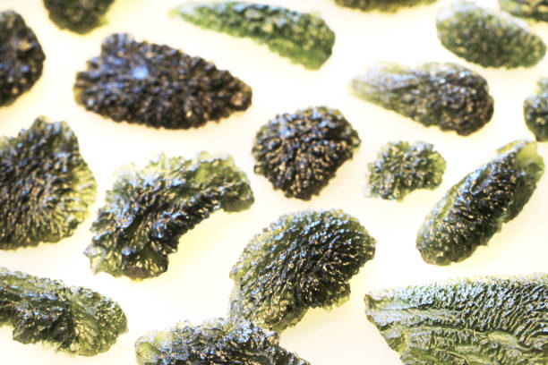

CRYSTAL
水晶
聯絡我們
隕石
幾萬年前從天上掉下來的外來之物,吸收了
宇宙間的能量物質,能量遠比水晶強大很多。
來說說三種隕石較受歡迎的隕石
01
捷克隕石
02
天鐵隕石
03
利比亞黃金隕石
01
捷克隕石
地球上最稀有的礦物之一，比鑽石更稀有。它的形成約在一千五百萬年前，當時有一顆巨大的隕石撞擊到地球表面，由於大爆炸產生了高溫與高壓，而將這顆隕石與周圍的石頭融合成如浪花般的玻璃狀物質。
捷克隕石磁場非常強，對人的影響也非常明顯，它能帶給人們一種非常正面的力量，讓人們去看清楚自己的選擇是否正確，如果你對未來怯意十足，它也能帶來鼓勵的力量。所以捷克隕石是非常適合有修行想法的人群，因為它的磁場非常的穩定也具有一種融合的力量，能夠讓人們擺脫曲高和寡的想法，而讓人們更好的將自己的靈性思維和現實融合一起。
捷克隕石功效
1. 有助於建立健康、開朗、活潑、樂觀的人生觀。
2. 綠色光代表正財，象征事業、生意所帶來的財富。
3. 適合信心不足或需要一點運氣的人，增加多一點幸運的能量。
4. 可以防止各種病氣、濁氣、雜氣的上身。
5. 可以釋放心中的負能量，消除憂鬱負能量。
6. 有助沉穩睡眠，消除累積的疲勞和壓力。
7. 與其他水晶一起佩戴可加強其他水晶的靈性，效果相乘。

02
天鐵隕石
天鐘含有大量鐵、鎳，亦稱為鎳鐵隕石。它可抵受高達攝氏 2000度的高溫，蘊藏無比強大的能量。其渾然天成的紋理錯綜複雜，是人工無法複製的。
天鐵本身蘊含強大能量，它會無時無刻發放出強大的能量場，保護著配戴者，免受外界的負能量或邪氣入侵。
天鐵發出的能量場，除了可保持之外，還可以為配戴姐的氣場加持。增強你的氣勢及領導力、說服力等。並令你時刻精力充沛，大大提高你的工作效率。
天鐵隕石功效
1. 提升自身能量磁場，配戴在身上就像帶著一座能量場，可以隨時補充能量、提升自我磁場。
2. 可用來擋煞辟邪、護身保平安、鎮宅，尤其是本身體質較虛、氣場弱、八字輕，或常出入磁場混濁場所的人。
3.對應到各個脈輪，增強七脈輪、活絡經脈穴位，促進循環、加強體力耐力，並且洗淨身上的負面磁場、去病氣。
4.天鐵能開發潛能，使人頭腦更清晰，以增強學習力、記憶力、提升靈性，亦對決策、直覺、創造力有幫助。
5. 除了上述的優點，還能聚財氣福氣，招來好運，並且如同流星一樣可以許願，帶給人滿滿的希望與祝福，隕石就像連結外太空的捷徑一般，幫助誠心的願望成真。
03
利比亞黃金隕石
在2900萬年前形成，形成原因至今仍是科學界與地質界的謎團，相信是慧星或不同星體撞擊地球表面，與地表的砂石塵土高溫相融化而成。 科學家一直要追尋撞擊的隕石坑才肯相信，當地居民聲稱只要先搬離撒哈拉沙漠上所有的沙，就可發現隕石坑。當地人說利比亞隕石具有超能力，喜將之雕刻成胸墜、耳飾等。
就連著名埃及法老王圖坦克曼（King Tutankhamen）亦配戴有黃金隕石的項鍊吊飾，伴隨其靈魂步入永恆。話說，研究這位法老王陵墓的考古學家發現，國王的陪葬寶石飾物，是一件由金黃色礦物雕刻的甲蟲吊墜，但是卻一直找不到任何礦物與之匹配。終於在1998年，一位意大利礦物學家證明甲蟲吊墜由利比亞隕石制成。因為具有強烈的防護和阻擋外侵物的能量，圖坦卡門的陵墓是3300年來唯一完好無缺的法老陵墓！是強大的守護者能量寶石～
利比亞黃金隕石功效
1.白色至金黃的色調對應全身七個脈輪，有平衡、協調、圓滿之效。
2.強大的能量、溫和地釋放，可消磁淨化各脈輪及週身氣場。
3.強大的能量足以驅散沙漠中各種邪靈、鬼魂、精怪，可當護身符。
4.純淨的能量能夠淨化人們的靈魂，洗滌一生所犯的罪孽過錯，回到根源與眾祖靈相會，並步入永恆。
5.黃金隕石可提高敏感度，增進第六感，有助險境逢生，轉敗為勝。
6.黃金隕石具有超自然力量，可使得配戴靜心修行者蛻變提升，獲大精進。